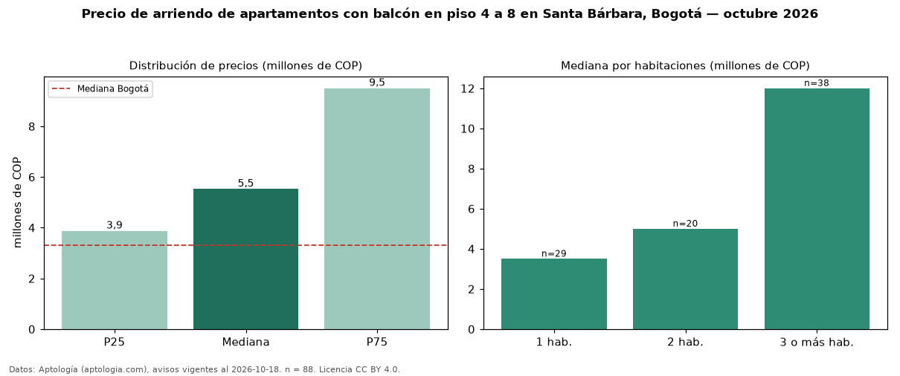

Precio de arriendo de apartamentos con balcón en piso 4 a 8 en Santa Bárbara, Bogotá — octubre 2026
Con 88 avisos vigentes, el canon mediano de apartamentos con balcón en piso 4 a 8 en arriendo en Santa Bárbara (localidad de Usaquén), Bogotá es COP 5,52 millones al mes. Eso es 10 % más que la mediana de los apartamentos con balcón en arriendo de Santa Bárbara (COP 5,00 millones, n = 203); este segmento reúne el 43 % de esos avisos. Por metro cuadrado, la mediana es COP 52.659/m² al mes (n = 88), 3 % por debajo de los apartamentos con balcón en arriendo de Santa Bárbara (COP 54.167/m²). El área mediana anunciada es 98 m². La mitad central de los avisos va de COP 3,87 millones a COP 9,50 millones (razón 2,5), una dispersión alta. El segmento con más oferta es el de 3 o más habitaciones (38 avisos, mediana COP 12 millones); pasar de 1 habitación a 3 o más habitaciones cambia la mediana +243 %. La administración mediana declarada es COP 950.400 al mes (n = 45), aparte del canon. El estrato más frecuente es 6 (63 % de los avisos con estrato). Datos: Aptología (aptologia.com), CC BY 4.0 — https://www.aptologia.com/arriendo/bogota/santa-barbara. Archivos: PDF, CSV con las cifras y gráfica PNG.

| Avisos únicos | 88 |
|---|---|
| Percentil 25 | COP 3.871.850 |
| Mediana | COP 5.524.800 |
| Percentil 75 | COP 9.500.000 |
| Mediana por m² | COP 52.658 |
Fuente: avisos vigentes de portales inmobiliarios recopilados por Aptología, deduplicados (mínimo 30 avisos únicos por celda). Precios pedidos, no cerrados. Fecha: 2026-10-18.